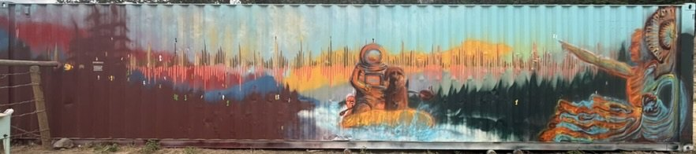

Watch Gavin’s documentary about my journey into art ↗
“We trusted in each other, and what emerged was magnificent.”
An exercise in trusting in the process and serendipity.

Watch Gavin’s documentary about my journey into art ↗
“We trusted in each other, and what emerged was magnificent.”